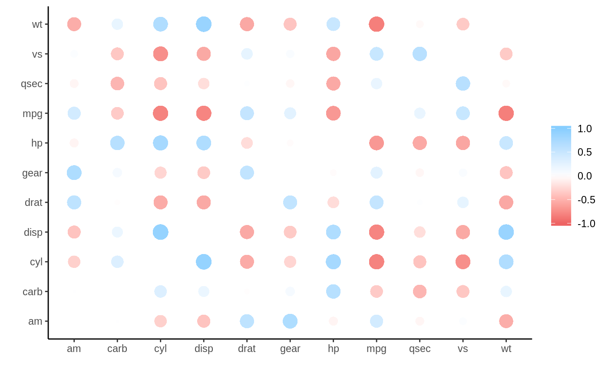

To calculate correlations with data inside databases, it is very common to import the data into R and then run the analysis. This is not a desirable path, because of the overhead created by copying the data into memory.
Taking advantage of the latest features offered by dbplyr and rlang, it is now possible to run the correlation calculation inside the database, thus avoiding importing the data.
A simple SQLite database will be used to this example. A temporary database is created, and the mtcars data set is copied to it. The db_mtcars variable is only a pointer to the new table inside the database, it does not hold any data.
Even though it is not a formal data.frame object, db_mtcars can be use as if it was a data.frame and simply pipe it into the correlate() function.
The correlate() function will check the type of object passed, if it is a database-backed table, meaning a tbl_sql() object class, then it will use the new tidyeval code to calculate the correlations inside the database. The function will automatically retrieve only the results of the operation.
library(dplyr)
library(corrr)
db_mtcars %>%
correlate(quiet = TRUE)
#> # A tibble: 11 x 12
#> rowname mpg cyl disp hp drat wt qsec vs am
#> <chr> <dbl> <dbl> <dbl> <dbl> <dbl> <dbl> <dbl> <dbl> <dbl>
#> 1 mpg NA -0.852 -0.848 -0.776 0.681 -0.868 0.419 0.664 0.600
#> 2 cyl -0.852 NA 0.902 0.832 -0.700 0.782 -0.591 -0.811 -0.523
#> 3 disp -0.848 0.902 NA 0.791 -0.710 0.888 -0.434 -0.710 -0.591
#> 4 hp -0.776 0.832 0.791 NA -0.449 0.659 -0.708 -0.723 -0.243
#> 5 drat 0.681 -0.700 -0.710 -0.449 NA -0.712 0.0912 0.440 0.713
#> 6 wt -0.868 0.782 0.888 0.659 -0.712 NA -0.175 -0.555 -0.692
#> 7 qsec 0.419 -0.591 -0.434 -0.708 0.0912 -0.175 NA 0.745 -0.230
#> 8 vs 0.664 -0.811 -0.710 -0.723 0.440 -0.555 0.745 NA 0.168
#> 9 am 0.600 -0.523 -0.591 -0.243 0.713 -0.692 -0.230 0.168 NA
#> 10 gear 0.480 -0.493 -0.556 -0.126 0.700 -0.583 -0.213 0.206 0.794
#> 11 carb -0.551 0.527 0.395 0.750 -0.0908 0.428 -0.656 -0.570 0.0575
#> # … with 2 more variables: gear <dbl>, carb <dbl>The tidyeval-based function ensures that a cor_df object is returned, so then it can be used with other functions in the corrr package.
db_mtcars %>%
correlate(quiet = TRUE) %>%
rplot()
#> Don't know how to automatically pick scale for object of type noquote. Defaulting to continuous.
sparklyr
For connections using sparklyr, corrr will use that package function called ml_corr() to run all of the correlations at the same time. That is all done under the hood. The user just needs to pass a tbl_spark object to the correlate() function, and corrr will automatically select the right function to run.
When using correlate() with a database-backed table, please make sure to keep the following items in mind:
Only the pearson method is supported. It is the default method, so it is not necessary to pass it. But if a different method is chosen, then the operation will return an error.
Only pairwise complete observations are used. Meaning that the use argument has to be set to pairwise.complete.obs.
The y argument is not supported. This means that if 1-to-1 comparisons are needed, then pre-select the two variables prior passing it to the correlate() function.
The diagonal argument only accepts NA’s.